2.1 Drag n drop or paste from Clipboard to import decks from websites
Paste menu in window header
Some MTG webistes let you download a deck in *.txt format. Then you can open it as MTGO .txt
deck. However the website download deck button is not always easy to find, and sometimes there
is none. Also it's not that fast to locate the downloaded file in Load deck dialog.
I implemented Copy-paste & Drag-n-drop deck text features to cut down the hassle as much as I can.

| result | action |
|---|---|
| Create new deck from Clipboard or dragged text |
Ctrl + V, drag-n-drop
|
| Add Clipboard or dragged text to Deck |
Ctrl + Shift + V,
Shift + drag-n-drop
|
| Create collection from Clipboard or dragged text |
Alt + V
Alt + Drag-n-drop
|
| Add Clipboard or dragged text to Collection |
Alt + Shift + V
Alt + Shift + Drag-n-drop
|
| Copy Deck to clipboard |
Ctrl + C
|
| Copy Collection to clipboard |
Alt + C
|
Paste from Forge
Suppose you are playing Sealed Deck match in Forge. The first step is to build your deck from 90
cards in Forge deck editor. Forge developers took care for all of us by supporting Ctrl + C
to copy selected cards in List View mode from Deck editor. Now I took care too so you can paste
selected cards as Collection in Mtgdb.Gui. The next step is to enable Filter by Collection
and voila - you are working with the 90 cards from Sealed deck boosters to build your deck.
-
In Forge select and copy (
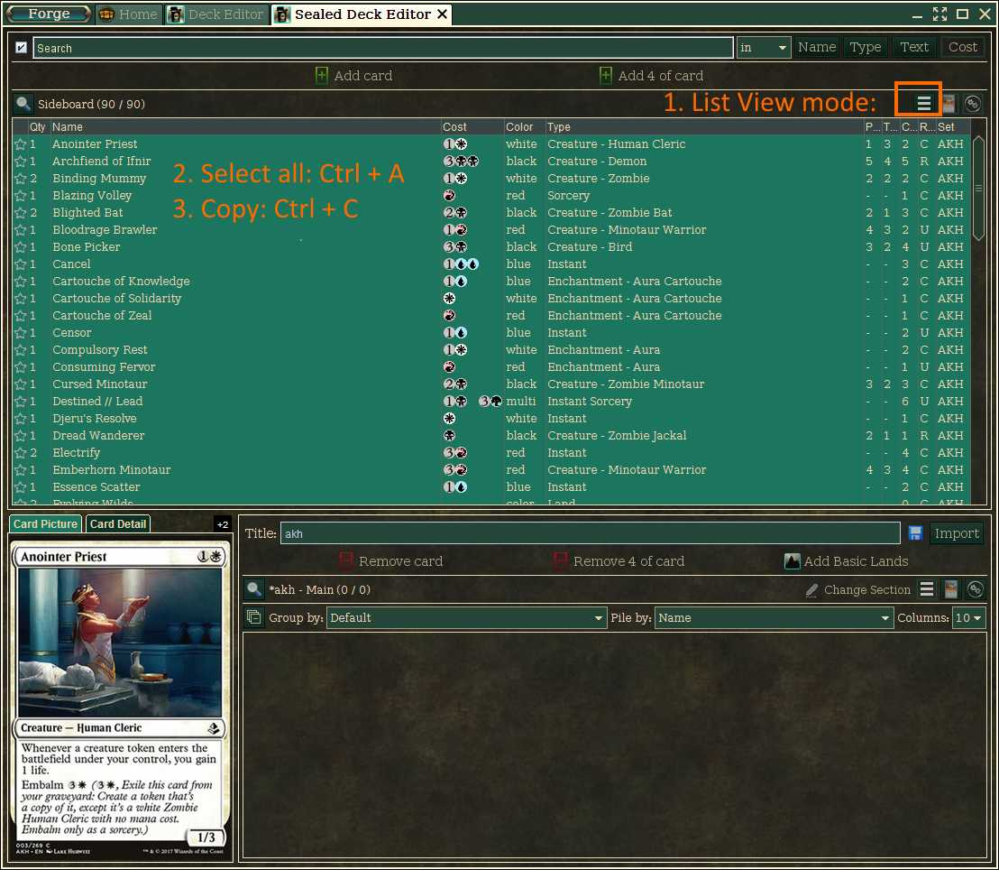Ctrl+C) cards in List View mode. -
In Mtgdb.Gui
- press
Alt+Vor pickPaste collection from ClipboardinPaste menu - filter by cards in collection
- press
{kind=link}
Now you can effectively build your deck from 90 cards available to you in Forge Deck editor. For example you can quickly estimate color distribution within available cards:

You can further estimate color distribution within the cards that have the synergy you are looking for:
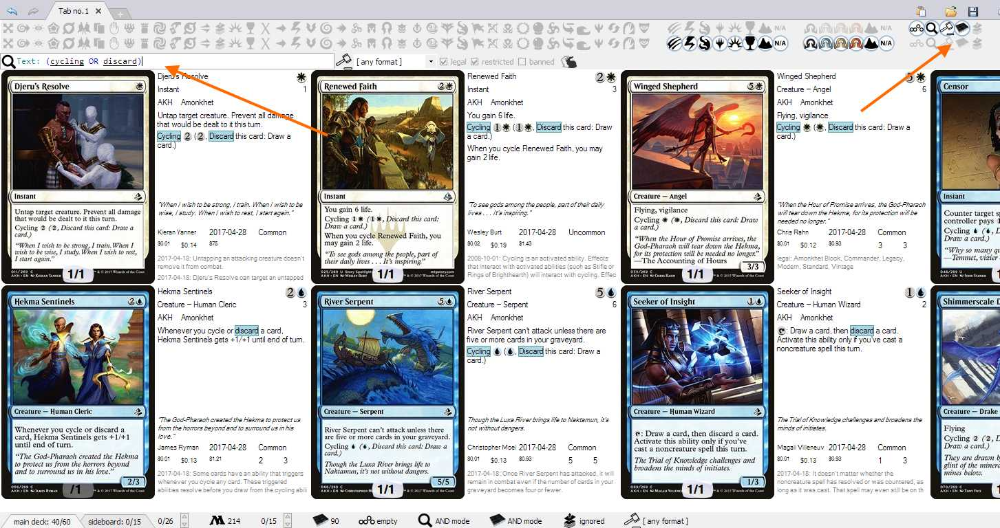 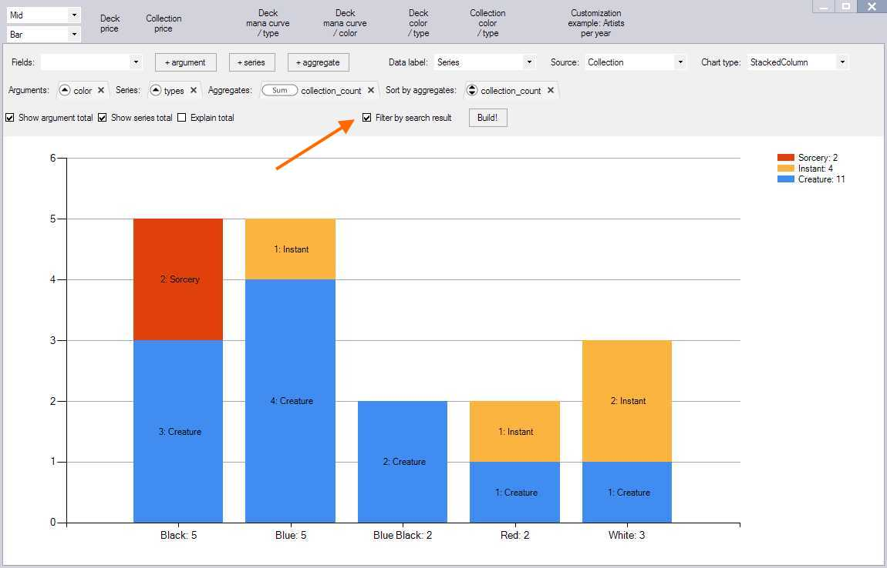{kind=link}
{kind=link}
Unfortunately there is a last-moment issue: Forge version 1.6.4-r-1 failed to import result to Deck editor in Sealed Deck mode.
The bug was fixed in Forge release 1.6.6.
Paste from various websites
| Website | Screenshots |
|---|---|
| deckbox.org | 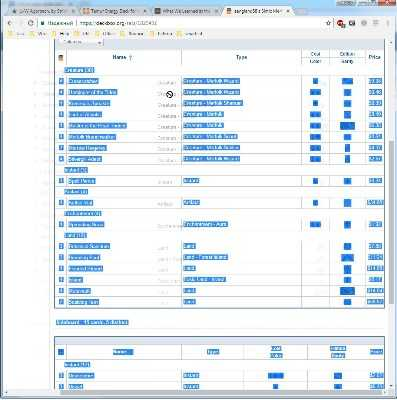 |
| 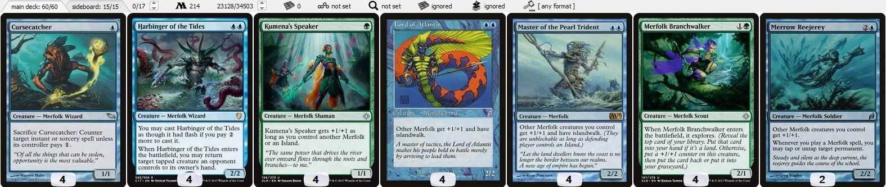 | |
| www.mtggoldfish.com | 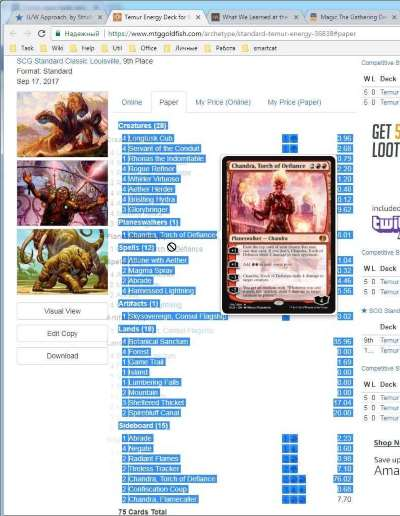 |
| 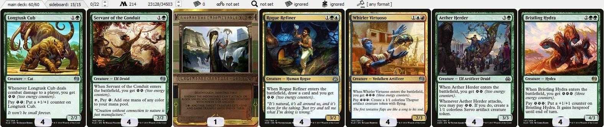 | |
| sales.starcitygames.com | 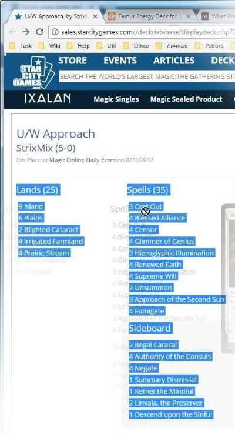 |
| 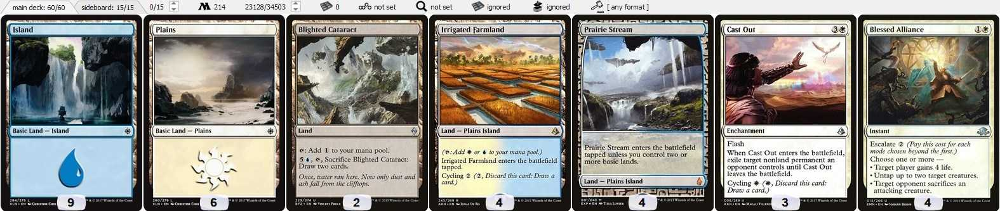 | |
| magic.wizards.com | 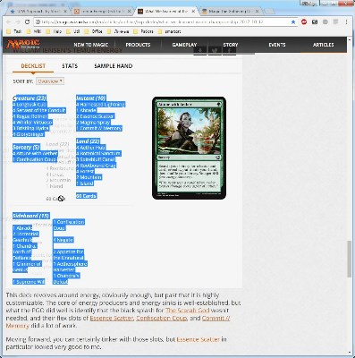 |
| 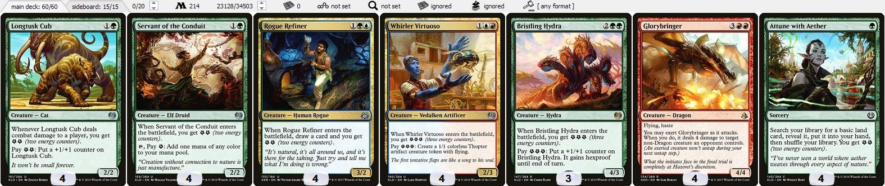 | |
{kind=link}
{kind=link}
{kind=link}
{kind=link}
{kind=link}
{kind=link}
{kind=link}
{kind=link}